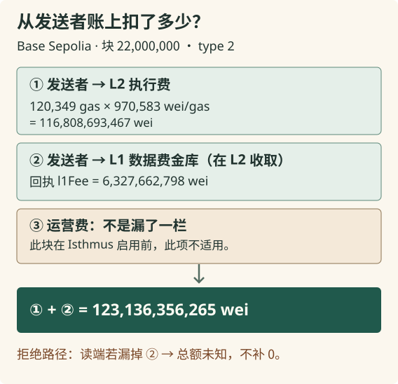

本页目录
先修：11 · Gas 与收支平衡、16 · 部署交接、23 · 报价与实收、25 · Rollup 的三处证据。这里有两笔不同的交易：旧凭条来自别人已经发过的一次普通合约调用；你要做的是在回环节点上真正创建第 16 课的 MilestoneEscrow。前者用来核对 L2 收费项目，绝不是后者的公测网部署或同一业务的成本对照实验。
先辨认哪一列是预算，哪一列是实付
在 EIP-1559 的普通交易中，发送者指定 gas（执行 gas 上限）、maxFeePerGas 和 maxPriorityFeePerGas。节点执行完才知道本笔用了多少 gas，回执的 gasUsed 是本笔用量，effectiveGasPrice 是本笔实际单价，已经包含适用的优先费。不能改用 cumulativeGasUsed（块内累计），也不能在乘积外再加一次小费。代码退回也可能有 status=0x0 的已入块回执，执行失败不等于没收费；若只收到 null，则还没有这张回执，不结账。
| 费用栏 | 在这张单上回答什么 | 不能拿什么代替 |
|---|---|---|
| 执行费，wei | gasUsed [gas] × effectiveGasPrice [wei/gas] |
eth_estimateGas 是在给定状态模拟，不是总价；gasLimit × maxFeePerGas 是本笔执行费的预算上界，不是实付 |
| L1 数据费，wei | L2 为向 L1 发布数据而向这笔用户交易收取的金额，读同一回执的 l1Fee |
不能把整笔 L1 批次交易的费用算在一个人头上；也不能拿该笔 L2 调用的 ABI 参数长度直接乘 L1 现价 |
| 其他协议收费，wei | 先用这条链、这个块的时间、交易类型定规则；若有运营费（operator fee），再取适用参数 | Anvil 的空字段、另一条链的默认值、今天的费率或浏览器只显示两栏，都不能证明当时运营费是 0 |
为什么明明按 EVM 跑同一份字节码，还是不能随手比价？执行成本与当时状态、有效单价、硬分叉有关。Rollup 还为数据可用性付费：例如 Fjord 的规则估计序列化、有签名的整笔交易压缩后的大小，把 L1 基础费、blob 基础费及各自的缩放系数纳入计算。它是协议向用户已收的一个分摊金额，不承诺等于批次发布者后来在 L1 的边际支出。value 是随交易转移的原生资产，不是 gas；桥页面的跨层总报价可能还列有另外一步交易的预估费用或服务费，不能把报价、源链实付、目标链实付记在同一栏。Arbitrum 等其他网络要另查规则，不能看到相同 ABI 就套本表。


用 2025 年 2 月的回执核销差额
离线凭条是四次只读 RPC 的相关字段节选：eth_chainId、eth_getBlockByNumber、eth_getTransactionByHash、eth_getTransactionReceipt；不是把全量日志、签名或整块交易复制进仓库。历史 RPC 来源为 https://base-sepolia.drpc.org；可与该交易的区块浏览器记录和该块的独立索引对照。这笔 type=0x2、status=0x1 的调用不是 L1 注入的存款交易（0x7e），也不是创建合约。
- 对锚点：链
0x14a34 = 84532，块0x14fb180 = 22000000，交易在块内索引0x2a = 42；交易哈希与回执的transactionHash相同，交易和回执都指向这一个块哈希。 - 执行栏：
gasUsed=0x1d61d = 120349、effectiveGasPrice=0xecf57 = 970583 wei/gas。乘起来 116,808,693,467 wei。交易声明的gas=127440、maxFeePerGas=971758 wei/gas不进这个乘积。 - 数据栏：直接取
l1Fee=0x1792878ce = 6,327,662,798 wei。反算陷阱：旧的l1GasUsed=1600直接乘l1GasPrice=3591997464会算出 5,747,195,942,400 wei，与实收不符；Fjord 的计算还涉及压缩估计和价格系数，不可退回该简式。 - 第三栏：块时间
1739768288，即 2025-02-17 04:58:08 UTC。按当时的 Base Sepolia 升级清单，固定版本720185c，它已经进入 Holocene，尚未到 Isthmus 的1744905600（2025-04-17 16:00:00 UTC）。那个块的普通交易没有运营费这个收费项目；不是因为 JSON 恰好没有operatorFee字段才决定补零。 - 所以这笔的费用总额是 123,136,356,265 wei，不是总 gas，用
10¹⁸ wei = 1 ETH换算得 0.000000123136356265 测试 ETH。不据此推算真实法币成本、业务资产收入或 L1 最终化。Java 入账时用BigInteger做十六进制解码和乘加；字段缺失保留“未知”，格式化才用十进制刻度。
在仓库根目录用 Python 3.11 标准库即可离线复算：
python3 labs/m07/fees/fee_book.py history
期待 ARCHIVE 打印上述块与交易的完整哈希，EXEC 和 DATA 打印两个整数；RULE ... operator=not-applicable reason=before-Isthmus 后才有 RESULT totalFeeWei=123136356265。这重放的是留存字段，不是实时查询或独立验证区块头。需重新采集时，使用下文版本的 cast，在根目录执行以下可选只读步骤；根据原始回复的 transactions[42]、blockHash 和回执重新对齐。归档节点限流、已裁剪、返回 null 就标“未能在线复核”，不要换 latest 顶替。
READ_RPC=https://base-sepolia.drpc.org
TX=0xb4b14cab5151ac7335eb4d6aeb5675fe415ede7ba912bbd55c8a1789cd925a15
cast rpc --rpc-url "$READ_RPC" eth_chainId
cast rpc --rpc-url "$READ_RPC" eth_getBlockByNumber 0x14fb180 false
cast rpc --rpc-url "$READ_RPC" eth_getTransactionByHash "$TX"
cast rpc --rpc-url "$READ_RPC" eth_getTransactionReceipt "$TX"
如果是在升级后呢？ 不能沿用第 4 步。在适用 Isthmus 规则的普通用户交易，按 constant + floor(gasUsed × scalar / 10⁶) 算；Jovian 版本改用 constant + gasUsed × scalar × 100。纯手算示意：gasUsed=50000, scalar=20, constant=7，按前一条得 8 wei，按后一条得 100,000,007 wei。不是说 Base 曾采用这组参数。对新记录，应取得覆盖该块的协议版本、完整回执，在同一块查 L1Block 的 operatorFeeScalar()、operatorFeeConstant() 或按该版本读取 GasPriceOracle.getOperatorFee(实际 gasUsed)。Isthmus 的回执规则只在至少一个参数非零时添加这两个字段；不知 RPC 是否保留扩展字段时，不能把“都没返回”直接翻译成“都为零”。有块锚点与规则依据的零、分叉前的不适用、缺证据的未知，是三种不同状态。
在隔离节点真的部署一次，用两种读数算同一笔钱
本课不维护第二份托管源码。本地网络清单与只读 Base Sepolia 网络清单共用的制品标识都是 src/MilestoneEscrow.sol:MilestoneEscrow。只有前者能启动一个新节点并发送交易：回环端口 18626 须空闲，普通 Anvil 1.7.1、Cancun、链号 31337，不是 OP 节点，不运行排序器、batcher 或 L1。后者的 84532、创世哈希和只读 RPC 都单列，不预填部署地址。单有网络配置没有部署证明。
依赖：Bash、Python 3.11、lsof、第 13 课的 Foundry 1.7.1、solc 0.8.28 安装器。若尚未准备工具，在仓库根目录运行一次 bash labs/m04/setup.sh（下载工具需要联网）；随后数据采集只连本机，forge build --offline。以下在同一 Bash、仓库根目录运行：
export PATH="${XDG_CACHE_HOME:-$HOME/.cache}/chain-course/m04/bin:$PATH"
export FOUNDRY_SOLC="$(command -v solc)"
unset ANVIL
WORK=$(mktemp -d)
BOOK=labs/m07/fees/fee_book.py
python3 "$BOOK" local --out "$WORK/anvil" > "$WORK/deploy.txt" && cat "$WORK/deploy.txt"
python3 -m json.tool "$WORK/anvil/deployment.json"
顺着读账程序核四处，不必相信一行 success：
local()先确认连接的是自己新开的节点、链号与所选清单一致。build_contract()复用 M04 的干净构建：相同 source unit、优化器 200 runs、Cancun、固定 solc。创建交易的input是创建字节码接两个 ABI 字：payee和未来的deadline；to=null、value=0。把同一份.sol复制到另一目录、改优化设置或部署参数，都可能改变交易字节和费用。BUDGET来自入块前的eth_estimateGas和本次选择的上限。签名交易的gasLimit=3000000、maxFeePerGas=2000000000 wei/gas将执行费预算上界放在 6,000,000,000,000,000 wei，绝不表示已扣这个数。只用回环节点的临时解锁测试账户，无助记词或私钥进档。check_release()按部署块高重取块，核对块哈希、交易成员关系、成功回执、创建地址和部署者；对读链上真实input与本地创建字节码加参数；按块哈希读eth_getCode，比对实际 runtime 的 SHA-256。DEPLOY ... rebuiltInputMatch=true runtimeMatch=true说明与本次清单吻合，不等于字节码经过安全审计，亦不证明 L1 最终化。immutable包含部署者、收款人和期限，另一条链上即便源码完全相同，也不应照抄 runtime 摘要。EXEC据本次回执算实收；普通 Anvil 上这笔 type 2 创建不产生 L2 数据发布费、运营费，所以这两项记“不适用”。RESULT totalFeeWei=… payerDebitWei=… balanceMatch=true还用一个独立量核对：只有这笔零value创建进入第一个块，构造函数不给部署者转账，部署者不是费用接收者，因此创世状态余额减创建块状态余额应等于执行费。两次eth_getBalance都按各自块哈希读。公网同一块可能有其他资金进出；不能把块间余额差无条件当成一笔交易费用。
deployment.json 留存本链身份、交易/块哈希、地址、参数、源码/创建码/运行码摘要；receipt.json 是节点的回执；balances.json 是余额与块锚点及预算输入。三份证据加 deploy.txt 一起交接。每轮节点结束即销毁；地址、创建数据里的非零字节、实际 gas、绝对时间与哈希不固定，只核同一轮内的整数等式。清单和归档目录不能覆盖上次结果。
停止实验：一张清单用错链，一张回执少字段
猜测正确输出后，沿用上面的 WORK 和 BOOK。第一轮只把预期清单换成 Base Sepolia，发送端始终是自己的 Anvil，不会切向公网：
rc=0; python3 "$BOOK" local --expect base-sepolia --out "$WORK/wrong" > "$WORK/wrong.txt" 2>&1 || rc=$?
cat "$WORK/wrong.txt"; test "$rc" -eq 3 && test ! -e "$WORK/wrong"
要看到 HOLD wrong_chain expected=84532 actual=31337 before_send=true，无创建交易。若见的是端口占用或编译错误，不算通过了这道闸。第二轮模拟 SDK 把链专用字段丢了，只改副本，不更改原始节点记录：
python3 - "$WORK/incomplete.json" <<'PY'
import json, pathlib, sys
sample = json.loads(pathlib.Path('labs/m07/fees/receipt-22000000.json').read_text())
del sample['receipt']['l1Fee']
pathlib.Path(sys.argv[1]).write_text(json.dumps(sample))
PY
rc=0; python3 "$BOOK" history "$WORK/incomplete.json" > "$WORK/incomplete.txt" 2>&1 || rc=$?
cat "$WORK/incomplete.txt"; test "$rc" -eq 3
应保留已知执行分项 116808693467，并得到 HOLD missing_or_invalid=l1Fee totalFeeWei=unavailable；不得出现给出数字总额的 RESULT。这不是“收费为零”，也不是交易失败，而是账单采集不完整。回到支持扩展字段的节点按原哈希只读补证；不要重发原交易。
可选交接：对方说已经在 Base Sepolia 部署了同一份合约
此练习不要求创建钱包、领取测试币或向公网发送。没有对方已发布的独立清单，就记录“Base 部署未提供”，本地交付与历史费用练习仍可各自完成。不能挪用前面的 claim() 哈希或把本地 chainId 改成 84532。若有被授权用于教学的既有直接部署，按以下清单交接：
- 提交人与接手人分别保留
anvil/deployment.json、base-sepolia/deployment.json。后者取与本地相同的字段名和 JSON 类型：chainId、deploymentBlockNumber、deadline为十进制整数；genesisHash、deployer、payee、contractAddress、deploymentTransactionHash、deploymentBlockHash为各自的0x…标识；三个…Sha256为无0x的小写十六进制（sourceSha256、creationCodeSha256、runtimeSha256）。从该链的发布记录取值；同时交编译器与设置、ABI、构造输入和原回执。没有直接创建时不要借一个工厂调用硬套这套校验。 - 接手人从独立途径取得可信源码、网络配置与上述清单。将收到的文件保存在
$WORK/base-sepolia/deployment.json，沿用已准备的工具环境和BOOK，运行python3 "$BOOK" verify-base "$WORK/base-sepolia/deployment.json"。这一入口固定只读 RPC；先问链 ID、创世块，再做块、交易和重建字节对读。供应商若不支持历史状态、扩展字段或按块哈希读eth_getCode，停在缺口；不降级成读latest或相信相同地址。故意输入本地凭证python3 "$BOOK" verify-base "$WORK/anvil/deployment.json"应在联网前退出 3，wrong_chain_in_release。 - 分开签收“部署可核对”和“费用全额可核销”。 本读端内置的 Base 自动合计只覆盖本课核过的历史窗口
[Holocene, Isthmus)的普通 type 2 交易。其他窗口即使已经打印DEPLOY ... runtimeMatch=true、EXEC、DATA，仍会给fee_rules_not_covered_for_block而不给总额。接手人要按新块核对 Base 自己的升级规范与交易类型，用该块的实耗 gas、l1Fee、经证明适用的其他收费重开费用单；不能拿一份旧的 OP Stack 参数表充数。
独立作业 F-26B：上限翻高，就该多付吗？
测试经理把另一单的 gasLimit 定为 4,000,000，单价上限仍为 2 gwei/gas。他还给了前面 Base 旧凭条里的两个上限，让你“把两张预算都当成本”。从干净部署和原始回执反驳他。在根目录接着运行：
python3 "$BOOK" local --gas-limit 4000000 --out "$WORK/job-b" > "$WORK/job-b.txt" && cat "$WORK/job-b.txt"
python3 - "$WORK/job-b" <<'PY'
import json, pathlib, sys
p = pathlib.Path(sys.argv[1]); r = json.loads((p/'receipt.json').read_text()); b = json.loads((p/'balances.json').read_text())
execution = int(r['gasUsed'], 16) * int(r['effectiveGasPrice'], 16)
print('executionWei', execution, 'payerDeltaWei', int(b['beforeWei']) - int(b['afterWei']))
assert r['blockHash'] == b['blockHash'] and execution == int(b['beforeWei']) - int(b['afterWei'])
PY
签收标准： 本地交新目录中三份 JSON 和日志，写出预算 8,000,000,000,000,000 wei、自己的实收及其两种取数路径；不要求两次独立部署的 gasUsed 一模一样。历史单交手算：127440 × 971758 = 123,840,839,520 wei 是当时执行费预算上界，不是 116,808,693,467 的实收，也不承诺覆盖全部 L2 收费；它碰巧高于该笔含数据费的总和并非定理。再挑一项必需字段（如 effectiveGasPrice）在另一份副本删去，保留退出 3 且没有数字总额的输出，说明要补取哪笔、哪块的数据。只交浏览器截图、以预算代替扣款、或把 31337 的部署写成 84532 已发布，都不能签收。
查证原文
- Base 的网络与 RPC、Base 的回执字段和网络费说明：区分查询、估算与已入块的单价、
gasUsed和l1Fee。 - OP Stack Fjord 执行规范：FastLZ 的输入、估计尺寸下限、缩放因子、
l1GasUsed的局限；Base Isthmus 启用时刻、Base 的升级历史：计算任何新单前重新核对网络、时代与适用规则。 - EIP-1559 用于解释执行费上限与优先费；EIP-1898 用于固定余额、代码及只读调用的状态锚点。这些共同接口并不保证不同链有相同的费用或最终性语义。